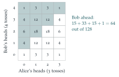

STEP I 2016, Question 12
Read the question before you go on. It is in the STEP Support Programme’s question database: step.maths.org/questions/16-s1-q12
The hook
Bob tosses one more coin than Alice. What is the probability that he gets more heads? He has an advantage, but heads are not guaranteed, and ties go against him. Work out the first two cases by brute force and the answer is \(\frac12\) both times. Is that a coincidence?
It is not, and there is a proof that takes one sentence, once you notice that Bob must get either more heads than Alice or more tails, but not both. This question is a model of how a calculation can suggest a pattern, and how a clever symmetry can then explain it.
Before you start
Alice tosses twice: what is the distribution of her number of heads? And Bob, tossing three times?
Alice gets \(0, 1, 2\) heads with probabilities \(\frac14, \frac24, \frac14\); Bob gets \(0, 1, 2, 3\) with probabilities \(\frac18, \frac38, \frac38, \frac18\).
Working it through
Stage 1 Brute force
For part (i), add up over Alice’s number of heads: \[\begin{aligned} \mathrm{P}(B > A) &= \tfrac14\,\mathrm{P}(B \geq 1) + \tfrac24\,\mathrm{P}(B \geq 2) + \tfrac14\,\mathrm{P}(B = 3) \\ &= \tfrac14\cdot\tfrac78 + \tfrac12\cdot\tfrac48 + \tfrac14\cdot\tfrac18 = \frac{7 + 8 + 1}{32} = \frac12. \end{aligned}\] Part (ii) is the same calculation with more terms; counting the \(8 \times 16 = 128\) equally likely outcomes, \(64\) have Bob ahead (Figure 12.6.1), so again the answer is \(\frac12\).
Stage 2 Splitting Bob’s tosses
Think of Bob’s \(n + 1\) tosses as \(n\) tosses followed by one extra toss. After his first \(n\) tosses, he is ahead of Alice, level with her, or behind. What happens in each case?
After \(n\) tosses each, Bob is ahead with probability \(p_2\), level with probability \(p_1\), and behind with probability \(p_2\) (by symmetry between Alice and Bob). If he is ahead, he stays ahead. If he is level, his extra toss puts him ahead with probability \(\frac12\). If he is behind, one extra head can at best draw level. So \[\mathrm{P}(\text{Bob more heads}) = p_2 + \tfrac12p_1.\] Since the three cases cover everything, \(2p_2 + p_1 = 1\), and so \(p_2 + \frac12p_1 = \frac12\). With one extra coin, Bob gets more heads with probability exactly \(\frac12\), for every \(n\).■
Here is the one-sentence proof. Bob has \(n + 1\) tosses, so his heads and tails add to \(n + 1\), one more than Alice’s. Show that Bob has more heads than Alice if and only if he does not have more tails than Alice. Since heads and tails are symmetric, these two events have equal probability, so each is \(\frac12\).
Indeed, writing \(H_A + T_A = n\) and \(H_B + T_B = n + 1\): if \(H_B > H_A\) then \(H_B \geq H_A + 1\), so \(T_B = n + 1 - H_B \leq n - H_A = T_A\); and conversely if \(T_B \leq T_A\) then \(H_B \geq H_A + 1\). So “more heads” and “more tails” are complementary, and swapping heads and tails (which does not change the probabilities, as the coins are fair) swaps them.

Looking back
Compute small cases. Two calculations suggested the answer \(\frac12\).
Condition on a natural split. Separating Bob’s extra toss reduced the problem to an even contest plus one coin.
Find the complementary pair. “More heads” and “more tails” are complements and are swapped by a symmetry.
What’s really going on
Symmetry and complements
The slick proof combines two facts: two events that are swapped by a symmetry have equal probabilities, and two complementary events have probabilities adding to \(1\). If both hold, each has probability \(\frac12\). The same reasoning appears throughout probability. In the airline problem (Section 12.5), \(S_1\) and \(S_n\) were swapped by a symmetry and exactly one of them is left at the end. In a game of Hex, the board’s symmetry and the fact that exactly one player must win show that the first player has the advantage, though nobody knows a winning strategy on large boards.
How likely is a tie?
For equal numbers of tosses the tie probability \(p_1\) matters. Alice and Bob tie when Alice’s heads equal Bob’s heads, which (replacing Bob’s heads by his tails, by symmetry) has the same probability as Alice’s heads plus Bob’s heads equalling \(n\): a total of \(n\) heads in \(2n\) tosses. So \[p_1 = \binom{2n}{n}\frac{1}{4^n} \approx \frac{1}{\sqrt{\pi n}},\] using Stirling’s approximation (Section 12.23). Ties become rare, but slowly: with \(100\) tosses each, the chance of a tie is still about \(5.6\%\).
The thinking skill
When a calculation gives a suspiciously simple answer, look for a reason. A simple answer usually has a simple explanation.
At university this habit separates understanding from computation. The first proof here confirms the answer; the second explains it, and generalises immediately (try exercise 2).
Try this next
Two extra coins. If Bob tosses \(n + 2\) coins and Alice \(n\), prove \(\mathrm{P}(\text{Bob more heads}) = \frac12 + \frac12\mathrm{P}(H' = H_A)\), where \(H'\) is the number of heads in Bob’s first \(n + 1\) tosses.
Biased coins. If both use a coin with probability \(p\) of heads, is the answer still \(\frac12\) with one extra toss? Which step of the slick proof fails?
Ties. Show that \(p_1 = \binom{2n}{n}/4^n\) by the trick in the text, and evaluate it for \(n = 1, 2, 3\).
Dice. Alice rolls \(n\) dice and Bob rolls \(n + 1\). Is the probability that Bob gets more sixes equal to \(\frac12\)?
Further reading
Peter Winkler, Mathematical Mind-Benders (A K Peters). Many probability puzzles with symmetric solutions.
Gabor Székely, Paradoxes in Probability Theory and Mathematical Statistics (Reidel).
Frederick Mosteller, Fifty Challenging Problems in Probability (Dover).